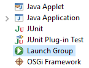
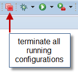
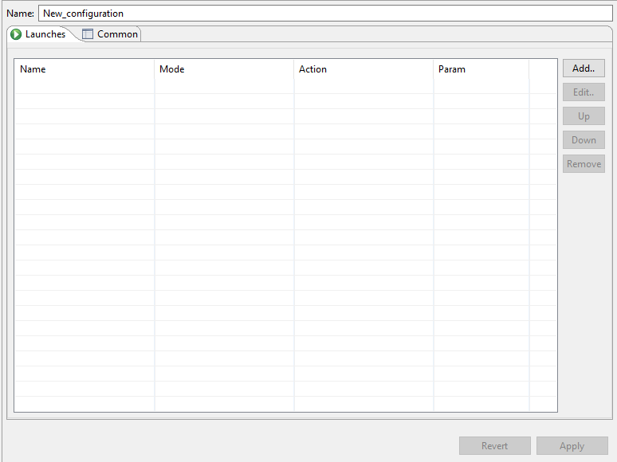

Multilauncher-Documentation
This plugin allows to run launch-configurations in a sequence automatically, while waiting for certain conditions to be met to start the next list-entry e.g. wait for termination.
GUI-Additions



Features
Create a parentlaunch (multilaunch), which functions as a container for childlaunches and even other parentlaunches. Add, Edit, Move and Remove your launches within your multilaunch.
You can create n multilaunches with the option to even nest and therefore combine them together.
Infinite-loops and wrong launch-references at any nesting-depth will be detected and consequently you won’t be able to run your multilaunch, until you’ve dealt with the shown error message.
Launch Modes
Run - is a native Eclipse-Implementation, which starts the application normally.
Debug - is a native Eclipse-Implementation, which starts the application normally but waits at breakpoints.
Inherit - is an auto adaptable mode, which varies from being in Run -or Debug. Depends on multilaunch startmode.
Waiting Strategies
None - Doesn’t wait.
Delay - Wait for a number of seconds.
Wait for termination - Waits for termination of a launch.
Wait for Console-String - Reads the output of all consoles and waits for a regular expression.
Examples
This multilaunch starts a Server and will only start the Application when any printed console-string contains: "successfully started".
This multilaunch starts 'Application 1' in run mode and will wait until it terminates, before 'Application 2' will be started in debug mode.